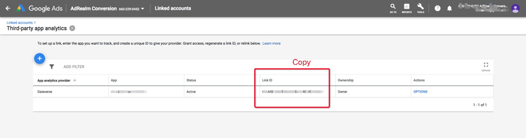

0.1. Link Id
Adsforce 是通过 Link Id 与 Adwords 连接，Link Id 需从 Adwords 中获取，获取方法如下所示：

打开Google Ads，点击帐户右上角的工具图标；
在设置项目下，单击"关联的帐户（Linked accounts）"；
在第三方应用分析（Third app analytics）下，单击“ 详细信息（DETAILS）”；
从以下选项中选择创建链接 ID：
- 如从未将任何应用分析提供商与 AdWords 帐户相关联，请点击"创建链接 ID（CREATE LINK ID）"；


- 如已将应用分析提供商与您的 AdWords 帐户相关联，且需创建其他链接，请点击加号按钮以关联新的提供商或应用。

选择其他提供商，关联 Adsforce。然后输入 Adsforce provider’s ID：66022904；
选择您的移动应用平台（安卓或 iOS）；
使用“查找您的应用（LOOK UP YOUR APP）”字段查找您的应用；
单击“创建链接 ID（CREATE LINK ID）”（如在此步骤中看到错误请联系我们）；
单击复制按钮以复制链接 ID（用于添加在 Adsforce的仪表板中）；

单击“完成”。
[success] 提示
在您将链接 ID 添加到第三方帐户并且转化数据开始流入 AdWords 之前，您的状态将显示“未验证”。